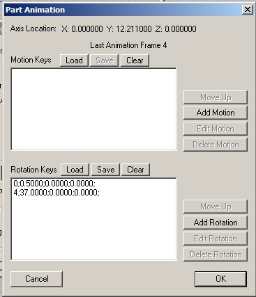

How To Animate An Electric Loco (And Make Parts Move Using The P Key): Section 2
by Paul DeVerter
A Port City Car Co. Project Copyright © 2005
SECTION 2 - The Trolley Pole
Now that we have completed the Rail Gun let's start on something that is essentially the same, but looks more like a rail locomotive. In the Rail Gun, we wanted a barrel to point upwardly when the Rail Gun was not powered, and to point horizontally (down) when the Rail Gun was able to move along the tracks. Here just the opposite - we want the trolley pole down when the locomotive, interurban, or streetcar is not powered, and up adjacent to the wire when the car is powered and running under its own steam.
Here is what we are going to build, again using simple shapes and vibrant colors
You know how to make a simple box for the main part or chassis, so proceed to do so. Next put a small box on the top to act as the trolley base. Finally, make a trolley pole. This time let's raise the main portion up in the air, as though on a single truck or bogie. This will require that we properly set the origin of this main part on the origin.
Recall that this is done by selecting the main part and then using the Move tool, raise it up to the desired elevation. Then holding down the SHIFT key, move the origin of the main part to the origin shown in the heavy white lines of TSM.
Because the trolley pole is going to rotate from down to up, you will likewise need to move the origin of the pole to the end of the pole that is adjacent the trolley base. For this exercise we do not need a wheel or shoe at the wire end.
We need to do some housekeeping. First we need to name the parts in accordance with the requirements of MSTS, and then we need to set up the animation requirements.
The chassis may be named Main. The trolley base may be named Trolley Base. But the pole must be named after one of the Train Names pantograph parts, so pick one you like, such as PantographBottom1. Parent both the Trolley Base and the Pantograph to Main. Ignore the Animation showing Rotation for the moment, as this photo was taken after the fact.
Go to Project Properties and again choose appropriate names for the project long and short names (Here I chose TrolleyPole for both), check Locomotive, then for Locomotive Type pick Electric, and finally for Animation Frames, this time choose 5.
Now it is time to set up the animation. Click the "Ani" button and up pops the Animate Part box. Note since we chose to have 5 Frames, this box shows that the Last Animation Frame is 4 and the initial Frame is 0. From our experience with the Rail Gun, we now know that the initial frame of animation is unpowered, so we will want the trolley pole to be down, and not up. Again since we are not doing anything but rotation, simply click the Set Rotation button. Move the Frame slider to the right, all the way
over to the far right, so that the Frame shown is 4. Here we must adjust the rotation of the pole, and you should know how to do that task. Once you have the pole rotated to the desired position, again push the Set Rotation button.
Move the slider back to the left to Frame 0. The pole should drop down to the lowered position when you get to Frame 3. And as we learned with the Rail Gun, the animation will slowly lower the pole when in MSTS, interpolating all the intermediate frames.
To check on our animation we can go to Part Properties and click on the Animation button which will bring up the Part Animation box. It shows the positions of the pole in Frames 0 and 4, and they both look good.

Now we need to try out our handiwork. This requires us to go to the Create Train Simulator Object, and fill out a few items to enable TSM to create the TrolleyPole locomotive in MSTS. Simply follow the instructions from the Rail Gun and check the appropriate boxes. Likewise make sure that the Target Locomotive will go to a Folder of your choice, namely TrolleyPole.
After clicking Continue, you will need to go to the Consist Editor and make a new consist for your TrolleyPole locomotive.
Then you can take a look at your new loco in MSTS. Ordinarily, the .eng file will show the trolley pole up, instead of down. This is because of the numbers in the line toward the bottom, named PantographToggle1, which will read ( 0 1 1 ). If you would like the initial position to be reversed, then change the line so that it reads:
PantographToggle1 ( 0 1 0 )
This will result in the pole being down, or in the initial animation frame position, in the default startup of the locomotive.
Here is what you will see in MSTS when you push the "P" key
The trolley pole will slowly raise itself up from the down position (Frame 0) to the upper position (Frame 4). The throttle will work only when the pole is up. If you were to put both the Rail Gun and this TrolleyPole in the Sim together, you would find that the pole moves about twice as fast as the Rail Gun barrel. Why? Because we used half as many frames to animate the pole.
Run the loco around a bit and observe the end of the pole adjacent the overhead wire. You have the pole parented to the Main, and so if the pole is up, and if the end is fairly close to the center of Main, lengthwise, the pole should follow the wire pretty well. But problems arise when you move the pole further off the lengthwise center of the Main to which it is parented. The further it gets from the center of the Main body, the further it will vary from the wire. We will talk about one way to manage this problem in a later section.
If you would like to see a trolley that is complete and has an animated trolley pole, made using the principles you have just learned, then go to the Train-Sim.com library, and obtain a copy of the Claremont Steeple Cab Locomotive #18, 18.zip, and its various fixes. It is a fine example of a trolley that has a trolley pole that rotates up and down with the press of the P key.
Now it is time to move on to a more complicated set of animations controlled by the "P" key, as we move to Section 3.